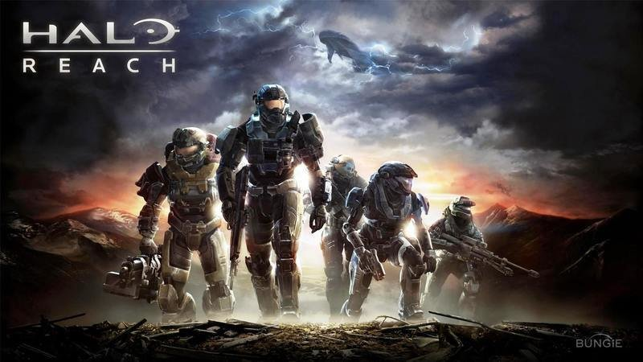
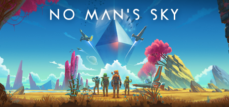

Halo Reach in my opinion was the Best Halo to have ever been made.
I have at least 1 or 2 thousand hours in this game. Me and my friends
always had game nights on Friday nights. Our favorite game mode to
play on game night was Predator. The game mode was based off of the
movie series Predator. Some of our other favorite game modes to play
were H1Z1, Jump rope, Flush, Rumble Derby, and speed Halo

This game has easily become one of my favorites in just a few days.
Yes, this game was not the best when it came out, but now it is very
good and there is a decent amount of content. This game is not for
everyone but I love playing adventure games.